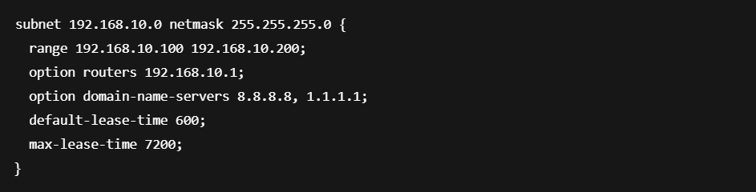

Projet 1.1 : DHCP Redondant
Mise en place d'une redondance DHCP sur Debian et Windows Server.
Résumé du projet
Ce projet s'inscrit dans la continuité de la refonte du réseau pour GSB. L’objectif était d’assurer une haute disponibilité du service DHCP en ajoutant un serveur Debian en redondance à un serveur Windows existant, le tout dans un environnement virtualisé sur ESXi.
- Création d’une machine virtuelle Debian.
- Installation et configuration de ISC DHCP Server.
- Configuration des plages d’adresses IP et des VLANs associés.
- Test d'attribution d'adresses IP via relais DHCP sur un switch de niveau 3.
Compétences développées
- Installation d’un système Linux sur hyperviseur ESXi.
- Déploiement et configuration d’un service réseau (DHCP).
- Tests de connectivité, vérification des baux DHCP.
- Réseau : gestion des VLANs, relais DHCP, interconnexion L3.
Exemples et explications
Schéma réseau DHCP & VLANs

Ce schéma présente la segmentation du réseau avec des VLANs, et les relais DHCP activés sur le switch L3 redirigeant les requêtes vers les deux serveurs DHCP en redondance.
Configuration ISC DHCP sur Debian
Capture de la configuration du fichier /etc/dhcp/dhcpd.conf avec plusieurs sous-réseaux et options précises (DNS, passerelles, durée des baux, etc.).
Test client et bail DHCP

Vérification sur un poste Windows via ipconfig que l’adresse IP attribuée correspond bien à la plage définie pour son VLAN, preuve que la redondance fonctionne même en cas d’arrêt d’un des serveurs DHCP.
Informations supplémentaires
Durée : 3 semaines
Rôle : Seul
Outils : Debian, ESXi, Windows Server, Switch L3 Cisco